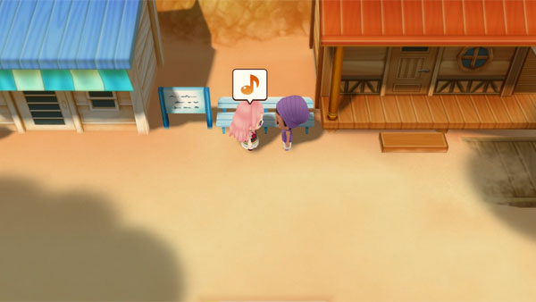
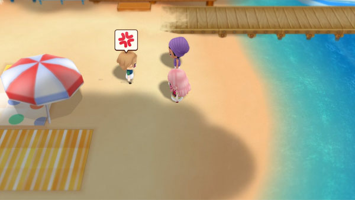

Kai y Popuri


Aqui podras ver los eventos corazón que ocurriran entre los candidatos de casamiento.
Evento Rival Negro
| Requisitos | |
|---|---|
|
 |
Se garantiza que el día 6 de verano será un día soleado.
Evento Rival Azul
| Requisitos | |
|---|---|
|
 |